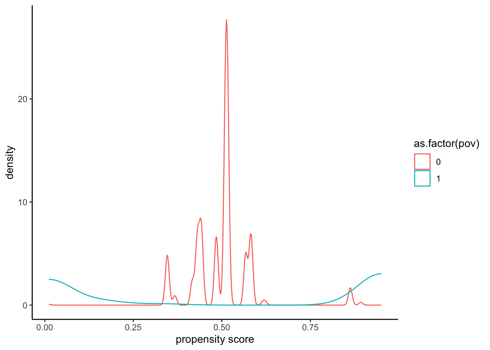
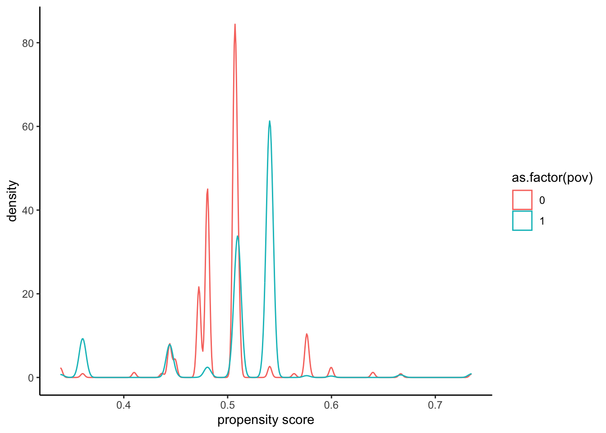

── Attaching core tidyverse packages ──────────────────────── tidyverse 2.0.0 ──
✔ dplyr 1.1.4 ✔ readr 2.1.4
✔ forcats 1.0.0 ✔ stringr 1.5.1
✔ ggplot2 3.4.4 ✔ tibble 3.2.1
✔ lubridate 1.9.2 ✔ tidyr 1.3.0
✔ purrr 1.0.2
── Conflicts ────────────────────────────────────────── tidyverse_conflicts() ──
✖ dplyr::filter() masks stats::filter()
✖ dplyr::lag() masks stats::lag()
ℹ Use the conflicted package (<http://conflicted.r-lib.org/>) to force all conflicts to become errors
Attaching package: 'srvyr'
The following object is masked from 'package:stats':
filter
Attaching package: 'data.table'
The following objects are masked from 'package:lubridate':
hour, isoweek, mday, minute, month, quarter, second, wday, week,
yday, year
The following objects are masked from 'package:dplyr':
between, first, last
The following object is masked from 'package:purrr':
transpose
Attaching package: 'recipes'
The following object is masked from 'package:stringr':
fixed
The following object is masked from 'package:stats':
step
Loading required package: usethis
Attaching package: 'devtools'
The following object is masked from 'package:recipes':
check
ℹ Loading tidysynthesis
ℹ Loading syntheval
Loading required package: scales
Attaching package: 'scales'
The following object is masked from 'package:purrr':
discard
The following object is masked from 'package:readr':
col_factor
Attaching package: 'MASS'
The following object is masked from 'package:srvyr':
select
The following object is masked from 'package:dplyr':
select
Loading required package: lattice
Attaching package: 'caret'
The following object is masked from 'package:purrr':
lift
Attaching package: 'gt'
The following object is masked from 'package:testthat':
matchespropensity_score_calculation
Comparing propensity scores in a single model fit on my “bad” synthesis (synthesizing from only the majority group). I’m interested in seeing whether we can detect, in the propensity scores, that the model is less confident on the minority group.
Getting the input data
# pull dataset
data <- read_ipums_micro("data/usa_00004.xml")Use of data from IPUMS USA is subject to conditions including that users should cite the data appropriately. Use command `ipums_conditions()` for more details.data <- data |>
mutate(across(where(is.labelled), ~as_factor(lbl_clean(.x))))
states <- c("Michigan")
vars <- c("STATEFIP", "PERNUM", "SEX", "AGE", "RACE",
"HCOVANY", "EDUC", "EMPSTAT", "FTOTINC", "POVERTY",
"VETSTAT")
data_mi <- data %>%
dplyr::select(all_of(vars)) %>%
filter(STATEFIP %in% states,
PERNUM == 1)
# recode factor variables (vetstat, sex, race, healthcare coverage, employment status didn't need recoding)
data_mi$EDUC <- recode(data_mi$EDUC,
"N/A or no schooling" = "N/A",
"Nursery school to grade 4" = "Less than high school",
"Grade 5, 6, 7, or 8" = "Less than high school",
"Grade 9" = "Some high school",
"Grade 10" = "Some high school",
"Grade 11" = "Some high school",
"Grade 12" = "High school",
"1 year of college" = "Some college",
"2 years of college" = "Some college",
"4 years of college" = "4+ years of college",
"5+ years of college" = "4+ years of college")
# recode numeric variables (age, poverty (as % of poverty threshold), and income)
data_mi$AGE <- as.numeric(as.character(recode(data_mi$AGE,
"Less than 1 year old"= "0",
"90 (90+ in 1980 and 1990)" = "90")))
data_mi$FTOTINC <- as.numeric(as.character(recode(data_mi$FTOTINC,
"No income (1950-2000, ACS/PRCS) " = "0")))Warning: NAs introduced by coerciondata_mi$POVERTY <- as.numeric(as.character(recode(data_mi$POVERTY,
"501 percent or more of poverty threshold" = "500",
"1 percent or less of poverty threshold (including 0 or negative income)" = "0")))Warning: NAs introduced by coercion# set character NAs to be NA
data_mi[data_mi == "N/A"]<-NA
# create poverty indicator
data_mi$pov <- ifelse(data_mi$POVERTY < 100, 1, 0)
# complete case analysis of adults only
data_mi <- data_mi %>%
filter(AGE >= 19,
complete.cases(.)) %>%
dplyr::select(-c("STATEFIP", "PERNUM", "POVERTY"))
# get rid of unused NA levels in factors (educ, empstat, vetstat)
data_mi = droplevels(data_mi)Making the synthetic dataset from only the majority group, permuting in the minority group
# function that takes start data and confidential data, and synthesizes dataset
synth_pov <- function(start_data, conf_data){
# synthesize categorical first, then continuous
visit_sequence = visit_sequence(c("SEX", "VETSTAT", "EMPSTAT", "EDUC", "HCOVANY", "RACE", "FTOTINC", "AGE"), start_data, type = "manual")
roadmap = roadmap(conf_data, start_data, visit_sequence)
recipe = construct_recipes(roadmap = roadmap)
tree_cl <- parsnip::decision_tree(cost_complexity = .0001) %>%
set_mode(mode = "classification") %>%
set_engine(engine = "rpart")
tree_reg <- parsnip::decision_tree(cost_complexity = .0001) %>%
set_mode(mode = "regression") %>%
set_engine(engine = "rpart")
synth_spec = synth_spec(roadmap,
synth_algorithms = list(tree_cl, tree_cl, tree_cl, tree_cl, tree_cl, tree_cl, tree_reg, tree_reg),
recipe,
predict_methods = sample_rpart)
# noise
noise <- noise(roadmap = roadmap,
add_noise = FALSE,
exclusions = 0)
# constraints
constraints <- constraints(roadmap = roadmap,
constraints = NULL,
max_z = 0)
replicates <- replicates(replicates = 1,
workers = 1,
summary_function = NULL)
# create a presynth object
presynth1 <- presynth(
roadmap = roadmap,
synth_spec = synth_spec,
noise = noise,
constraints = constraints,
replicates = replicates
)
synthesized = synthesize(presynth1, progress = TRUE)
synthesized
}# synthesize from only people not in poverty
start_data = data_mi[,"pov"]
start_data$pov = rep(0, nrow(data_mi))
conf_data = data_mi %>%
filter(pov == 0)
synthesized <- synth_pov(start_data, conf_data)[1] "1 SEX"
[1] "2 VETSTAT"
[1] "3 EMPSTAT"
[1] "4 EDUC"
[1] "5 HCOVANY"
[1] "6 RACE"
[1] "7 FTOTINC"
[1] "8 AGE"# apply permutation to dataset
synthesized_perm <- synthesized$synthetic_data
synthesized_perm$pov <- permute(data_mi$pov)calc_disc <- function(discriminator){
# Evaluate discriminant-based metrics on the data using tree-based model
tree_mod <- decision_tree(cost_complexity = tune()) %>%
set_mode(mode = "classification") %>%
set_engine(engine = "rpart")
rpart_rec <- recipe(.source_label ~ ., data = discriminator$combined_data)
grid = grid_regular(cost_complexity(), levels= 10)
# set up discriminator
d <- discriminator %>%
add_propensities_tuned(
grid = grid,
recipe = rpart_rec,
spec = tree_mod
)
}disc = discrimination(synthesized_perm, data_mi)
res = calc_disc(disc)props = res$propensities
ggplot(props, aes(x = .pred_synthetic, group = as.factor(pov), color = as.factor(pov)))+
geom_density()+
theme_classic()+
xlab("propensity score")
Now checking this out for the “good” synthesis (with change in variable ordering)
# synthesize from all people
start_data = data_mi[,"pov"]
conf_data = data_mi
# synthesize categorical first, then continuous
visit_sequence = visit_sequence(c("FTOTINC", "EMPSTAT", "EDUC", "RACE", "SEX", "HCOVANY", "VETSTAT", "AGE"), start_data, type = "manual")
roadmap = roadmap(conf_data, start_data, visit_sequence)
recipe = construct_recipes(roadmap = roadmap)
tree_cl <- parsnip::decision_tree(cost_complexity = .0001) %>%
set_mode(mode = "classification") %>%
set_engine(engine = "rpart")
tree_reg <- parsnip::decision_tree(cost_complexity = .0001) %>%
set_mode(mode = "regression") %>%
set_engine(engine = "rpart")
synth_spec = synth_spec(roadmap,
synth_algorithms = list(tree_reg, tree_cl, tree_cl, tree_cl, tree_cl, tree_cl, tree_cl, tree_reg),
recipe,
predict_methods = sample_rpart)
# noise
noise <- noise(roadmap = roadmap,
add_noise = FALSE,
exclusions = 0)
# constraints
constraints <- constraints(roadmap = roadmap,
constraints = NULL,
max_z = 0)
replicates <- replicates(replicates = 1,
workers = 1,
summary_function = NULL)
# create a presynth object
presynth1 <- presynth(
roadmap = roadmap,
synth_spec = synth_spec,
noise = noise,
constraints = constraints,
replicates = replicates
)
synthesized_v2 = synthesize(presynth1, progress = TRUE)[1] "1 FTOTINC"
[1] "2 EMPSTAT"
[1] "3 EDUC"
[1] "4 RACE"
[1] "5 SEX"
[1] "6 HCOVANY"
[1] "7 VETSTAT"
[1] "8 AGE"disc = discrimination(synthesized_v2, data_mi)
res_v2 = calc_disc(disc)props_v2 = res_v2$propensities
ggplot(props_v2, aes(x = .pred_synthetic, group = as.factor(pov), color = as.factor(pov)))+
geom_density()+
theme_classic()+
xlab("propensity score")